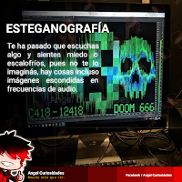
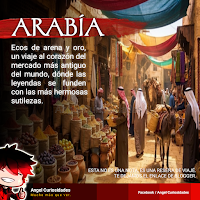
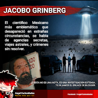
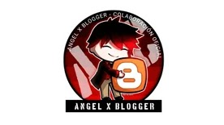
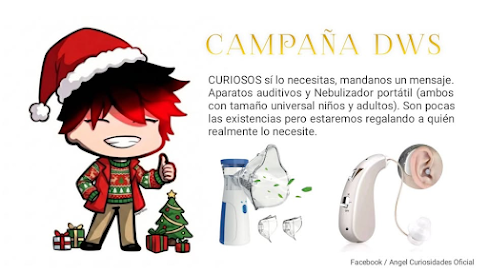

Esta comunidad está dedicada a preservar a Angel Curiosidades, anteriormente conocida como EDC El Dato Curioso, plataforma de divulgación de conocimiento y curiosidades creada por el Influencer y artista digital Angel Cruger en 2017. Se van a ir actualizando los diferentes espacios para integrar la información ya que es mucha y queremos ir poco a poco puliendo el trabajo que presentó en su plataforma que hoy no sube tantos contenidos pero que nos dio muchos temas de conversación por un buen tiempo. Creímos que terminaría siendo el chico influencer de redes sociales o como él lo llamó en su página Facebooker (para diferenciarse de Youtubers y ya que las comunidades en Facebook no tenían nombre específico como Tiktokers o Bloggers).
Páginas oficiales y Archivo:
- https://www.facebook.com/AngelCuriosidadesOficial (Facebook Oficial)
- https://AngelCuriosidades.Blogspot.com (Blogspot de respaldo)
- https://youtu.be/WfhwzR-2Bpc (Conócenos te compartimos un poco más sobre nosotros)
SUMARIO
Historia y Orígenes
El proyecto principal de Cruger nació en 2015 bajo el nombre EDC El Dato Curioso. En una época donde las redes sociales se llenaban de páginas de entretenimiento con información inconsistente o falsa (como la popular página "¿Sabías qué?"), Angel decidió fundar un espacio dedicado a compartir datos reales, verificados y estructurados. Durante sus primeros años, el creador también experimentó con otros formatos, fundando en 2016 Rigathz, una revista digital independiente enfocada en el periodismo y la cobertura de eventos de la comunidad gamer y otaku.
Crecimiento y la "Guerra Digital"

Hacia 2019, la plataforma comenzó a definir su estilo propio y a profesionalizar su contenido. Durante este periodo, EDC entró en una competencia orgánica por la audiencia contra páginas gigantes de Facebook. Como respuesta, Cruger desarrolló formatos característicos, algunas de las páginas a las que se enfrentaron durante las primeras ¨guerras digitales¨ comenzaron a implementar formatos como la serie "100 datos que no sabías de", a manera de respuesta por el auge de captar más seguidores y visitas en redes sociales sobre todo en Facebook (cuando la plataforma no monetizaba a creativos) lo que impulsó la página a alcanzar sus primeros 10,000 seguidores con un formato característico y muy completo que algunos catalogaron de ¨demasiada información¨ pero que no te quedaba duda de que sabía la respuesta y que había investigación detrás, a finales de ese mismo año.

Las secciones de la pagina suelen incluir temas diversos, entre ellos, comparte noticias importantes, misterio, temas tecnológicos, pero una de las secciones que mas le han gustado a sus seguidores suelen ser aquellas que narran viajes o anécdotas sobre mundos antiguos, por ello la imagen que acompaña este punto es la de ARABÍA una de las publicaciones que mas le gustaron a los usuarios de facebook. Angel suele compartir solo con comunidades de facebook, aunque en varias ocasiones ha intentado conectar con nuevas audiencias siempre regresa o mantiene mas activa la comunidad de facebook donde tiene grupos de paginas con miles de seguidores, uno de ellos relacionado directamente con Angel Curiosidades.

El proyecto se forjó a través de pausas forzadas y adversidades significativas, incluyendo el robo total de su equipo de trabajo en 2019 y un ciberataque masivo a finales de 2022 que destruyó sus unidades de almacenamiento principales. A pesar de esto, durante la pandemia de 2020 y 2021, la plataforma experimentó su mayor auge al compartir notas verificadas sobre salud y actualidad, logrando picos de audiencia que superaron los 2 millones de personas alcanzadas de forma orgánica. La página enfrentó diversos periodos e incluso llegó a perder una parte de sus seguidores por incluir temas para agradar a una mayor audiencia como MEMES, chistes ocasionales, frases célebres, más variedad en temas como novedades, tecnologías, tendencias, actualidad, naturaleza, etc.
Identidad visual y Rainbow Red

El universo de Angel Curiosidades se distingue fuertemente por su apartado visual, operado bajo el sello de su propia casa productora, ONESTUDIO MULTIMEDIA. El corazón visual de la marca es su mascota oficial: Rainbow Red. Este personaje ilustrado de estilo "Chibi", caracterizado por su cabello rojo, ropa oscura y ojos de estrella, es el embajador del proyecto y protagoniza reacciones, plantillas y material didáctico. El origen de "Red" se remonta a animaciones cuadro por cuadro creadas por Angel entre 2014 y 2016 para una micro serie titulada "Banco Guazteca", donde el personaje era conocido inicialmente como "Angel Chibi". Tras múltiples rediseños, el personaje adoptó su forma definitiva como el rostro de la marca. Historias ampliadas se encuentran en el Universo GDM.
Evolución a Angel Curiosidades (2025)
En 2025, el proyecto abandonó el nombre "EDC El Dato Curioso" para evolucionar formalmente a Angel Curiosidades. Este cambio de marca buscó evitar confusiones con festivales de música electrónica y reflejar una identidad mucho más personal y directa con su creador. Actualmente, la comunidad principal supera los 30,000 seguidores y ha diversificado su contenido bajo el eslogan "Mucho más que ver...", incluyendo infografías, humor, recomendaciones de videojuegos y cápsulas audiovisuales. Además de Facebook, el proyecto mantiene archivo y presencia en plataformas como Blogger, TikTok, Instagram y YouTube.
Actualmente no mantiene mucha interacción con su comunidad, salvo por actualizaciones esporádicas, se llegaron a publicar promociones sobre apoyo a otros canales o ¨servicios profesionales de consultoría de redes sociales¨ que se ocuparon rápido y no se volvió a abrir nuevas fechas. Se sabe que varias paginas en diferentes plataformas de creadores emergentes surgieron por el apoyo o mentoría de Angel, algo que suele comentar ocasionalmente y que ha llegado a aparecer en comentarios dentro de publicaciones, sin embargo no se tiene una lista exacta con nombres. También ha influido en proyectos tecnológicos como Movail.
Angel Curiosidades también ha compartido activamente las campañas de la Fundación DWS.

El 26 de Diciembre de 2025 la Fundación DWS anunció junto a Angel Curiosidades en la pagina oficial AC el cierre de la ultima campaña (más reciente) sobre apoyo de donación de equipos médicos (dispositivos médicos que no requieren permisos o receta medica) los cuales eran Nebulizadores portátiles y Aparatos auditivos (solo dispositivos). La campaña buscaba apoyar de manera directa a personas que los necesitaran, ya sea adultos mayores o niños y adolescentes.